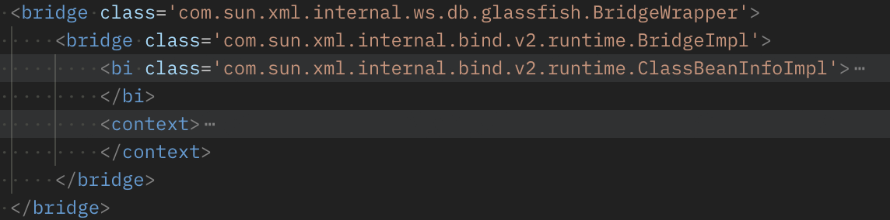
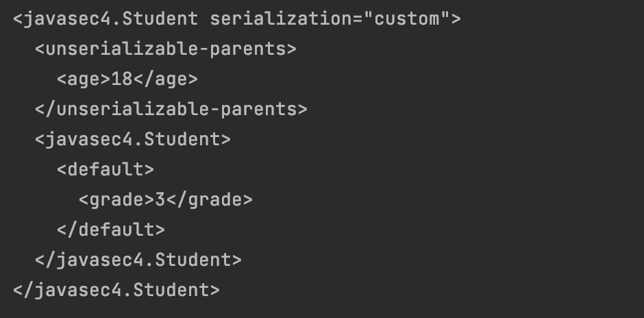

JavaSec系列 - 4. 反序列化与JNDI注入(2)
本章源码： https://github.com/hey3e/JavaSec-Code/tree/main/javasec4
深入分析CVE-2021-21344。
上章，我们以fastjson的JSON.parseObject为反序列化入口，JdbcRowSetImpl类的lookup方法为JNDI注入点，实现了一次完整的攻击。
类似，XML解析库XStream使用toXML和fromXML方法对Java对象进行序列化与反序列化，我们来看下它如何成为攻击的触发点。
首先了解一下基本原理。用下列代码处理上章的Person类：
1 | package javasec4; |
序列化后的XML为：
1 | <javasec4.Person> |
接下来我们对Person类稍作处理，使其实现Serializable接口并重写readObject方法：
1 | package javasec4; |
此时序列化后的XML为：
可以注意到两点，对于实现了Serializable接口并重写了readObject方法的类，其序列化后的XML会新增serialization="custom"字段，同时，类似于fastjson反序列化过程中类的getter和setter方法会得到执行，XML反序列化过程中，类重写的readObject会被执行。
记住这些，我们分层来分析CVE-2021-21344的POC：

最外层，是java.util.PriorityQueu类，一个借助其comparator进行排序的优先级队列。可知它实现了Serializable接口并重写了readObject方法。<default>标签下，是该类的两个属性size和comparator。最下面的便是队列中的两个字符串元素”javax.xml.ws.binding.attachments.inbound”。
为了更好的理解，我们可以自己定义这样一个队列并对其序列化：
1 | public class test { |
查看结果：
除comparator外，完全一致。
接下来重点看下comparator部分：
层层嵌套，我们用debug的方式来理解。
在PriorityQueue的readObject方法上下断点，发现它被如期调用：
对PriorityQueue而言，一个序列化后的队列字符串，反序列化要做的就是重新排序，对应readObject的heapify方法：
排序的标准便是前文提及的comparator，此处为sun.awt.datatransfer.DataTransferer$IndexOrderComparator类，常用于应用间通信。其compare方法，排序的对象便是两个”javax.xml.ws.binding.attachments.inbound”字符串：
同时，可见排序传入了DataTransferer$IndexOrderComparator类的indexMap，此处为com.sun.xml.internal.ws.client.ResponseContext类，顾名思义，它是通信中response报文的信息。在该comparator中，对两个元素的比较是通过比较二者在indexMap中的索引来实现的。在compareIndices方法中，调用get获取了元素的索引：
深入get，首先映入眼帘的便是基于报文主体packet的多次判断：
我们贴下POC中构造的<packet>部分进行对照：
第一个if，进入到supports：
对照POC，并无satellites，可以理解为并没有集成其他报文的属性。同理，也无else if中的handlerScopePropertyNames，因此进入else部分。这里的判断if (!key.equals("javax.xml.ws.binding.attachments.inbound"))表明了为什么PriorityQueu中的元素需要是”javax.xml.ws.binding.attachments.inbound”，而inbound message，实际上指来自移动设备的消息。于是来到最后的else：
其中，对packet的message，此处为com.sun.xml.internal.ws.encoding.xml.XMLMessage$XMLMultiPart，一个MIME类型的XML，进行了剖析。接下来，我们把注意力集中到message上，POC部分如下：
来到XMLMessage$XMLMultiPart的getMessage方法：

可见，getMessage最终需要delegate，而POC中并未构造，因此会借助dataSource来进行生成。这里的dataSource为com.sun.xml.internal.ws.message.JAXBAttachment，POC中可以看到，它有两个属性，bridge和jaxbObject。此处具体的生成逻辑为，利用dataSource提供的序列化操作，即JAXBAttachment的bridge，将dataSource的主体，即JAXBAttachment的jaxbObject，转化为字节流，传入MimeMultipartParser进行处理，以生成delegate并返回。
对照POC，我们看到这里的jaxbObject是上章用到过的JdbcRowSetImpl类，它的详细构造我们等下来看。这里，我们先保持思路跟进封装了一系列序列化操作的bridge，此处为com.sun.xml.internal.ws.db.glassfish.BridgeWrapper的com.sun.xml.internal.bind.v2.runtime.BridgeImpl类：

来到序列化方法marshal：
可见，该方法首先利用context的marshallerPool构造了一个Marshaller。于是我们跟进到POC的<context>：

可以发现<context>中<nameList>提供的两个属性均为空，这是因为其内容并不会影响到攻击的主逻辑，但是是必须的，如果没有则会报错。这里我展示了二者分别是在何处被访问到的：
<namespaceURIs>：
<localNames>：
分析完context，我们继续看序列化操作：
其中，t为JdbcRowSetImpl类，m为刚刚构造的Marshaller，而bi，此处为com.sun.xml.internal.bind.v2.runtime.ClassBeanInfoImpl，继承自com.sun.xml.internal.bind.v2.runtime.JaxBeanInfo，封装了具体到某一类的序列化操作。看下POC：
向下跟进，来到XMLSerializer类的childAsXsiType方法：
其中，比较完<jaxbType>与child，即JdbcRowSetImpl，的异同后，调用了actual，即POC中构造的bi：ClassBeanInfoImpl，的serializeURIs方法对JdbcRowSetImpl进行序列化：

这里我们看到<uriProperties>是不可或缺的。接着，调用了inheritedAttWildcard的get方法，此处为com.sun.xml.internal.bind.v2.runtime.reflect.Accessor$GetterSetterReflection，顾名思义，用于反射访问类的getter和setter。而这里的get，反射调用了JdbcRowSetImpl的getter方法：
上章，攻击借助了JdbcRowSetImpl的setAutoCommit方法，而实际上，它的一个getter方法，getDatabaseMetaData，也调用了connect，也就是我们在POC中所声明的。因此至此，我们已经从XStream反序列化的入口，挖掘到了JNDI注入点，整体的调用栈如下：
最后我们回头填前文<jaxbObject>的坑：
有了上章的经验，dataSource一目了然，攻击的最后一环也就绪了。
但是我们注意到奇怪的一点，这里dataSource被声明在了JdbcRowSetImpl的父类BaseRowSet中，而JdbcRowSetImpl本身并没有得到构造。
这与XML序列化的特点有关。我们构造一个Student类，使其继承自Person，并为其增加一个grade属性：
1 | public class Student extends Person implements Serializable { |
查看其序列化后的XML：

可见父类Person的属性age被声明在<javasec4.Student>外。以此类推，由于dataSource实际上归属于BaseRowSet，因此只需在其下声明即可。
完整的POC如下：
1 | <java.util.PriorityQueue serialization='custom'> |
共55行，相较于官网的103行，精简了许多。
总结一下，CVE-2021-21344的关键词有两个，PriorityQueue和JAX-WS (Java API For XML-WebService)。首先，XStream反序列化时，进入了PriorityQueue的反序列化方法，接着，借助JAX-WS的相关类，对XML再次进行了序列化，从而触发了JNDI注入。
JavaSec系列 - 4. 反序列化与JNDI注入(2)
https://hey3e.github.io/2022/01/17/JavaSec系列-4-反序列化与JNDI注入-2/